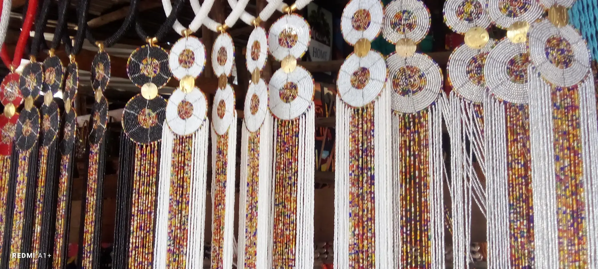
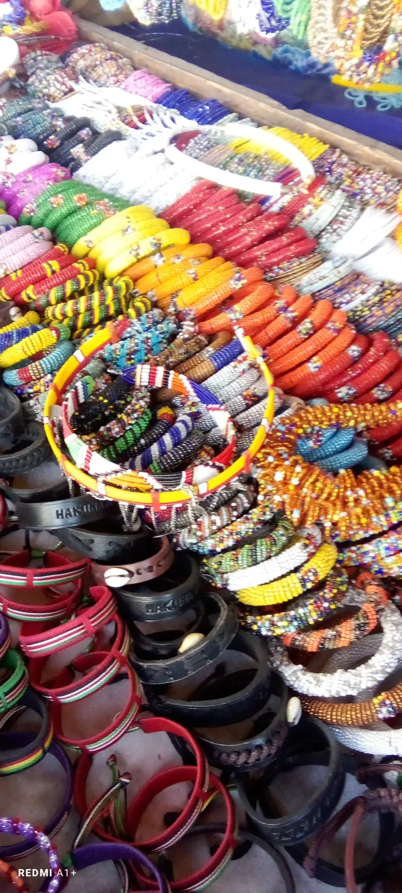

Craft First
Each piece keeps the handmade texture and bright bead detail that make African craft feel personal and alive.
SharonCraft celebrates African beadwork in a way that feels warm, clean, and easy for modern clients to shop. The goal is simple: make beautiful handmade work easier to discover, gift, and enjoy at home.
Our pieces are inspired by market color, ceremonial styling, family celebrations, and the pride of Kenyan craftsmanship. We keep the language simple, the ordering process friendly, and the design bright enough to feel alive.


Each piece keeps the handmade texture and bright bead detail that make African craft feel personal and alive.
The website, product pages, and CTAs are written in clear English so shopping feels easy for every customer.
The catalog is organized to grow with the business, so new products and collections can be added smoothly over time.
The SharonCraft look takes inspiration from market displays, event bead sets, home pieces, and the joyful use of color seen across East African creative spaces. The mood is modern, but the heart stays rooted in craft traditions.


SharonCraft is a Kenyan-based artisan business dedicated to producing and selling authentic, handmade African beadwork. Our catalog includes custom jewelry, home decor accents, and occasion sets designed for modern homes and memorable gifting.
Every single item in the SharonCraft collection is proudly handmade in Kenya by skilled craftspeople, honoring regional traditions while using vibrant, durable materials.
Our mission is to make beautiful, authentic African beadwork accessible and easy to purchase. We simplify the shopping journey by offering direct, conversational ordering so every customer gets personal attention and exactly what they want.
SharonCraft was founded and is led by CEO Kelvin Mark, who is dedicated to elevating the visibility of Kenyan craftsmanship on the global stage.